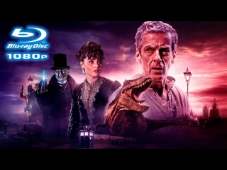
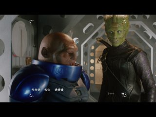
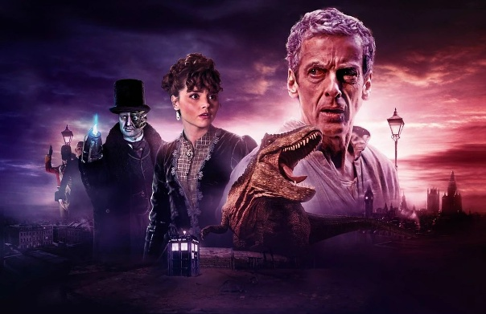

Весь 8-й сезон (12 серий)

 | Весь 8-й сезон (12 серий) |
Deep Breath
Дата выхода: 23 августа 2014
Формат: 76-минутный эпизод
| Варианты озвучек: | * Разные: смотрите по инструкции |
|---|---|
| Скачивание и просмотр: |
Над Темзой в Викторианском Лондоне разгуливает динозавр, и Команда Патерностер оказывается на месте, пытаясь помочь инспектору Грегсону выяснить, что произошло. Всё становится ясно, когда динозавр выкашливает ТАРДИС, которая падает на набережную.
С трудом узнавая своих друзей, новый Доктор пытается справиться с состоянием «пост-регенерации». Его странное поведение продолжается тем, что Доктор пытается разгадать загадку, почему у всех так сильно изменился акцент, однако ему предстоит раскрыть тайну куда более страшного дела...
